第 18 篇 · 光流重点 · 约 50 分钟
前面几篇已经能算出稀疏箭头或整幅稠密场。这一篇专门回答三件事：结果怎么「看懂」、有真值时怎么「打分」、以及哪些场景经典光流特别容易翻车。最后用一页对照深度学习光流（RAFT 一类），并收束稀疏 / 稠密怎么选型。
光流算法吐出来的是一堆数字：每个点（或每个像素）一个 (u, v)——水平挪多少、竖直挪多少。人眼看不懂几千个浮点数，所以要可视化：把向量画成箭头，或染成颜色。
若手头有「正确答案」（真值光流，ground truth），还要评估：估计值和真值差多远。最常用的标尺叫端点误差 EPE（Endpoint Error）。没有真值时，至少用可视化找「明显离谱」的区域，再结合前后向一致性等启发式（第 16 篇提过）。
生活类比：导航算出一条路线。箭头图像在地图上画几支路标；色轮像给整张路网涂色看堵不堵；EPE 像把估测里程和实测里程相减——有卷尺才谈得上「误差多少米」。
两种画法服务不同密度：
(x+u, y+v)。方向、长短一目了然，适合稀疏光流（LK 跟踪点）或对稠密场做「抽样展示」。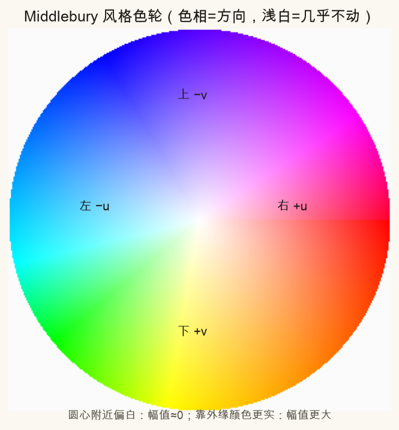
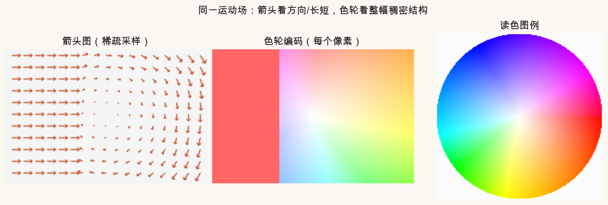
注意图像坐标：x 向右为正，y 向下为正。色轮标注里的「上」对应负的 v。读别人的色轮图时，先确认约定是否与 Middlebury 一致，避免把红当成「向上」。
脚本里用到的编码直觉（不必背代码）：
角度 θ ≈ atan2(-v, -u) # Middlebury 习惯，向右落在红色附近
幅值 r = sqrt(u² + v²)
颜色 = 按 θ 在色轮上插值，再按 r 从「白」拉向「实色」对某一个像素，真值是 (u_gt, v_gt)，算法给出 (u_est, v_est)。把两个向量都从同一起点画出，两个终点之间的欧氏距离就是该点的 EPE：
EPE = √[(uest − ugt)² + (vest − vgt)²]
白话：不是比「角度差」或「只比水平」，而是终点差了几个像素。整幅图常报平均 EPE（所有有效像素取平均）。遮挡区域往往没有可靠真值，评估时要先用 mask 抠掉。
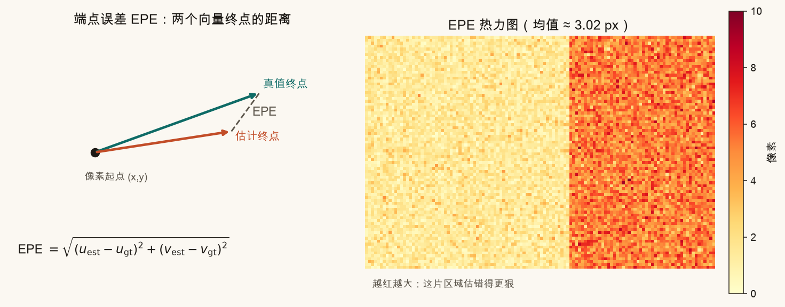
论文里还会看到 Fl-all、Fl-noc 等「错误像素比例」指标（误差超过阈值才算错）。入门先抓住 平均 EPE 就够：数字越小越好，单位是像素。
经典光流（亮度守恒 + 局部平滑 / 窗口）在下面几类场景会系统性变差。脚本用 Farneback 估流，再和已知真值比 EPE——数字会随随机纹理略有波动，但相对谁更惨的趋势稳定。
前景物体挪开后，原来被挡住的背景第一次露出来。这些像素在上一帧根本没有对应点，任何「找相似块」的方法都会瞎猜。遮挡边界附近 EPE 往往飙高。
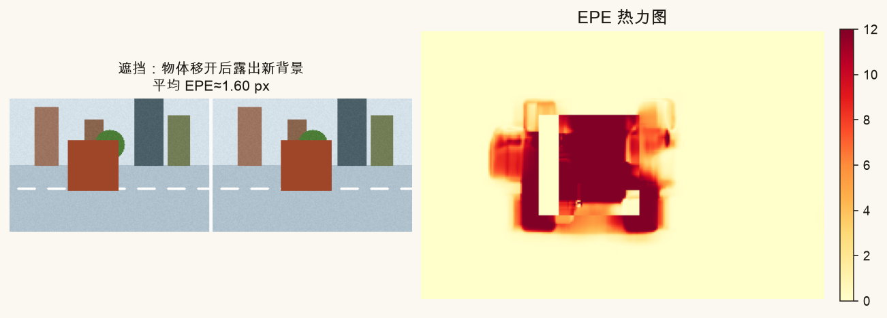
亮度守恒假设：同一物理点灰度差不多不变。闪光灯、自动曝光猛跳、阴影扫过——假设碎了，算法会把「变亮」误当成「挪到别处」。
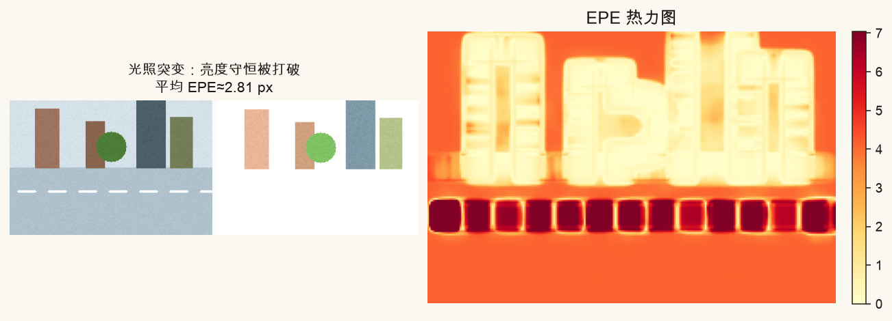
快门时间内物体（或相机）在动，第二帧边缘被抹成拖影。梯度变弱，匹配特征变糊，误差集中在结构边缘。
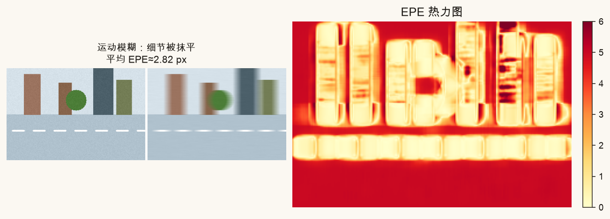
棋盘、百叶窗、瓷砖：很多窗口长得几乎一样（孔径问题的加强版）。算法可能匹配到错的那一格，位移差一个周期仍「看起来很像」。
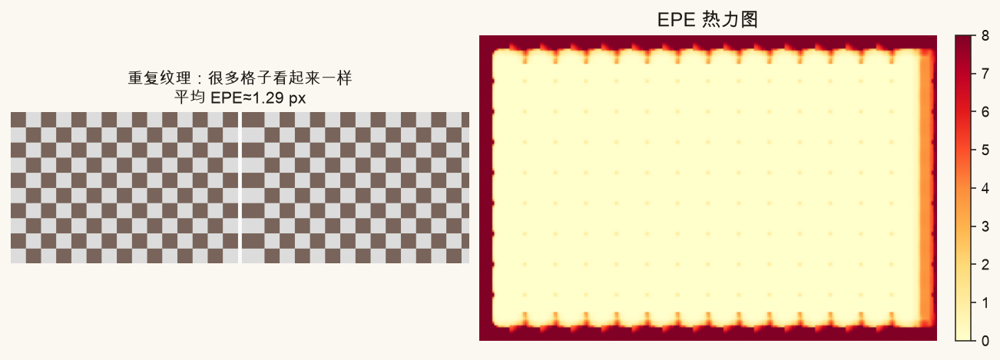
单层窗口只能「看见」附近。位移远超窗口 / 金字塔能覆盖的范围时，相关峰根本对不上，EPE 可以到几十像素。第 16 篇的金字塔、第 17 篇的多层 Farneback，就是为这个准备的；关掉层数就会翻车。
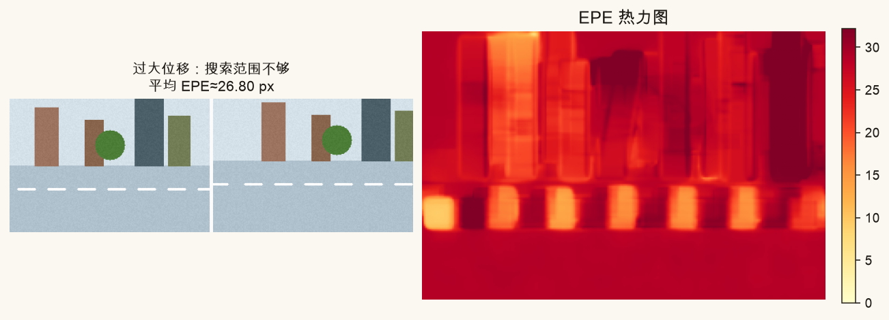
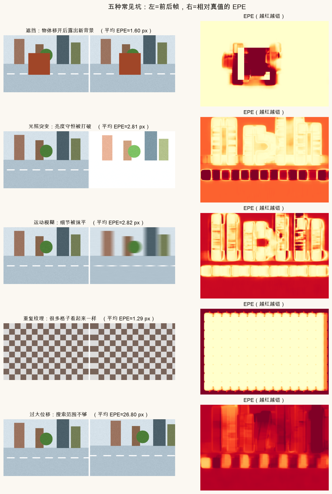
还有镜面高光、半透明、Rolling Shutter 果冻形变等。镜面破坏「同一点灰度稳定」；RS 让一帧内不同行处于不同时刻（第 21 篇）。本篇先把上面五类钉牢。
2015 年后，学习式光流（FlowNet 一族）再到 RAFT（Recurrent All-Pairs Field Transforms）一类方法，在公开榜单上往往显著低于经典 Farneback 的 EPE。直觉上它们在做什么：
(u,v)，像优化器在跑，但权重是学来的。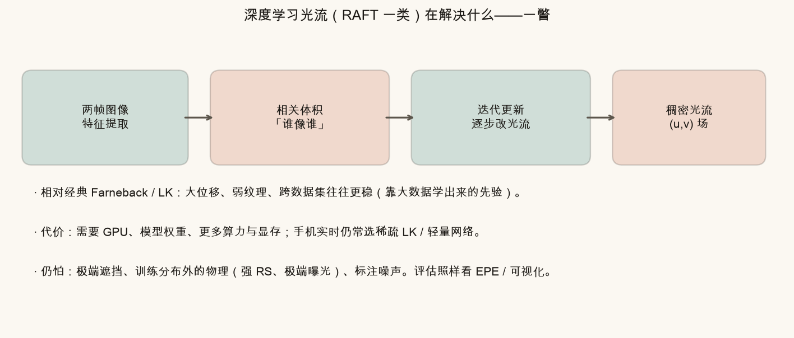
对本系列的实践含义：手机端实时防抖，多数仍先用稀疏金字塔 LK；要做运动分割、离线高质量对应，再考虑稠密经典法或学习式模型。不必本篇就上手训 RAFT，知道「色轮和 EPE 对深度模型同样适用」即可。
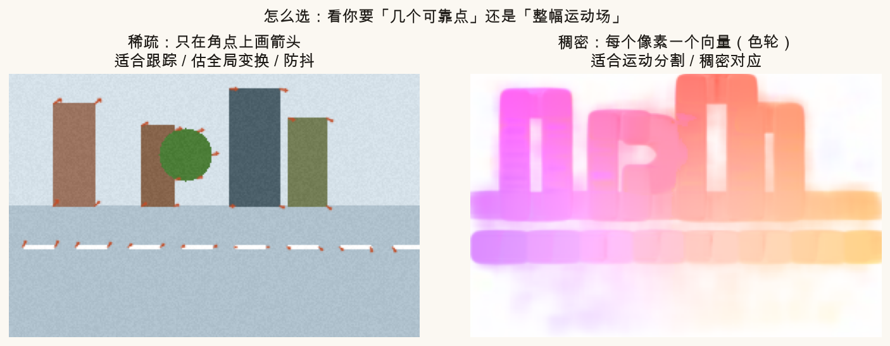
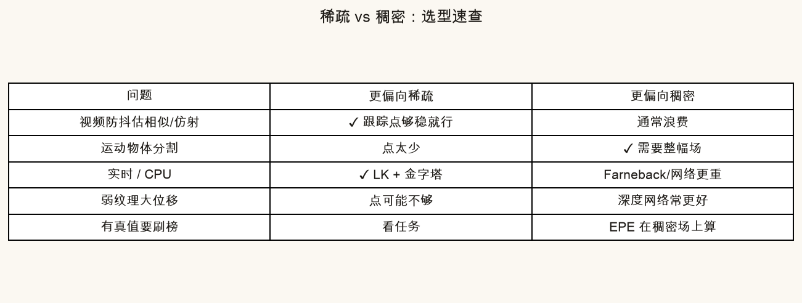
收束三句：
不必装 Python 也能建立手感。拖动 u、v：左侧箭头与色块同步变；右侧小色轮上的黑点标出当前方向。再拧「估计噪声」，看 EPE 读数怎么涨。
source .venv/bin/activate # 若尚未激活
MPLCONFIGDIR=/tmp/mpl-cache python code/ch18_flow_eval.py会写出色轮、箭头对照、EPE 示意、五种失败对照、稀疏/稠密与 RAFT 一瞥，以及你的 ch18_my_arrow_wheel.png、ch18_my_epe.png。终端应出现「自检通过」。
打开 code/ch18_flow_eval.py 顶部：
MY_FLOW_U、MY_FLOW_V 改成纯向上（例如 u=0, v=-10），看色轮是否偏紫、箭头是否朝上（屏幕上方）。MY_NOISE_STD 从 1.5 提到 5.0，重跑后 ch18_my_epe.png 的平均 EPE 应明显变大（噪声越大，平均 EPE 越接近几个 σ 的量级）。u=0.2, v=-0.1），色轮图应大面积偏白。(u,v)，确认方向直觉一致。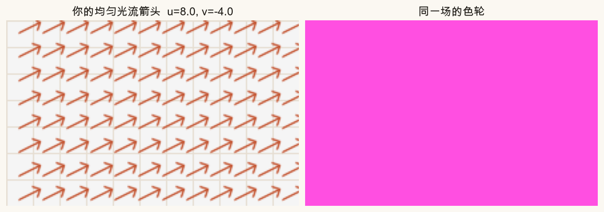
更适合箭头。点本来就少，箭头能直接读方向和长短；色轮是为「每个像素都有向量」的稠密场准备的。
估测光流终点与真值终点之间的欧氏距离，单位是像素。平均 EPE 是有效像素上的均值。
光照突变。遮挡是「没有对应点」；重复纹理是「对应点不唯一」；光照突变让同一点灰度假设失效。
优先稀疏（LK 跟踪点等）。只要有足够多可靠点就能估变换；稠密更重，对「全局稳像」往往多余。
中心对应幅值≈0（几乎不动）。颜色深浅/离白远近编码运动大小，色相编码方向。
光流重点线到此收束。下一篇进入防抖：用特征跟踪或光流估帧间变换 → 累积相机路径 → 平滑 → 补偿，并讨论「过平滑」带来的漂与裁切。